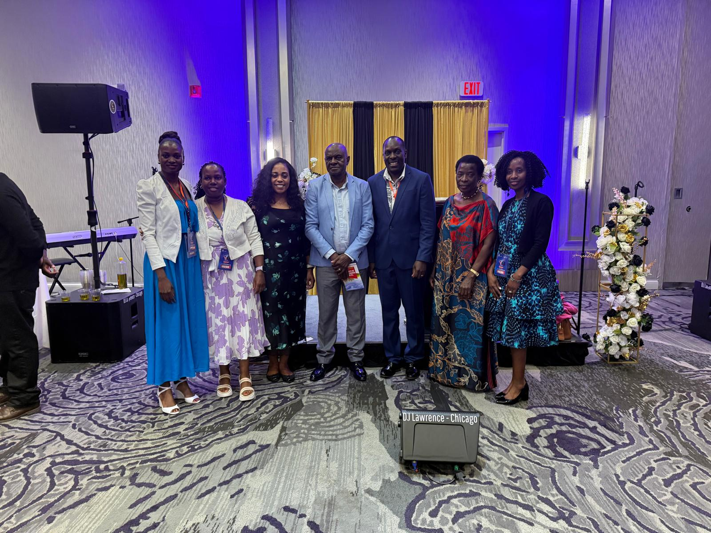

Who We Are
More than a church.
A family.
God Sent is a Christian Ministries and church located in Crystal Lake, Illinois. This church started in 2022 as a prayer altar online, on a WhatsApp platform and later on Zoom as the need for live streaming grew from our communities across the globe.
God later opened doors to establish a physical church in Crystal Lake. Our desire is to see people saved, healed, delivered and restored back to God.
Come Visit